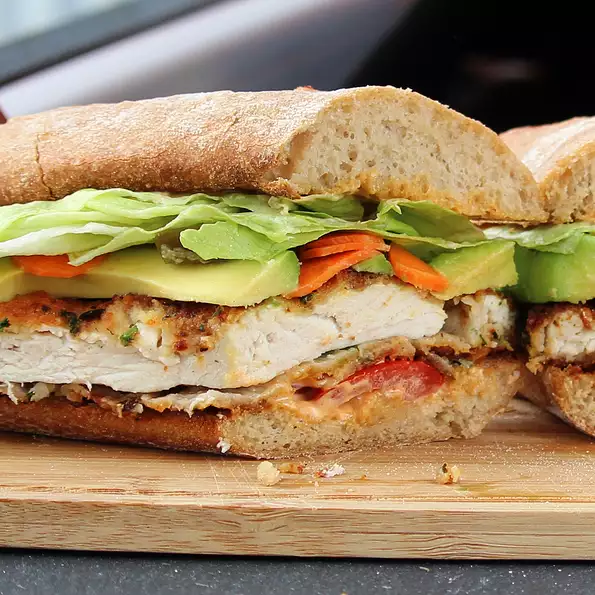

Torta de Milanesa de Pollo

Description
The Mexican version of the cotoletta alla Milanese served on a bun dressed
with South-of-the-Border fixings. Spicy breaded chicken breast gets
sandwiched between a toasted Mexican bun then topped with spicy spread,
avocado, lettuce, tomato, and pickled vegetables.
Ingredients
- ½ pound skinless, boneless chicken breast
- 1 ½ tablespoons cornstarch
- 1 egg
- ⅓ cup bread crumbs
- 2 tablespoons chopped fresh cilantro
- 1 teaspoon ground chipotle pepper
- 1 teaspoon dried Mexican oregano
- 1 teaspoon ground cumin
- ¼ teaspoon coarsely ground black pepper
- 2 bolillo rolls, sliced in half lengthwise
- 3 tablespoons mayonnaise
- 1 tablespoon hot sauce (such as Valentina®)
- 2 tablespoons sunflower seed oil
- ½ avocado, sliced
- 3 slices tomato
- 2 lettuce leaves
- 1 tablespoon pickled carrots
- 1 tablespoon pickled jalapeno peppers
Steps
- Preheat the oven to 250 degrees F (120 degrees C).
-
Seal chicken breast in a resealable zip-top plastic bag. Pound flat to
1/4-inch thickness. Add cornstarch and shake to coat.
-
Whisk egg in a shallow bowl. Dredge the chicken breast through the egg;
leave it in the bowl. Add bread crumbs, cilantro, chipotle, oregano,
cumin, and pepper to the bag; shake well. Lift chicken from the bowl,
letting any excess egg drip off. Add to the bread crumb mixture. Shake
and press the seasoned bread crumbs over the chicken breast.
-
Place bolillo buns in the preheated oven until warmed through and
toasted, about 12 minutes.
-
Meanwhile, mix mayonnaise and hot sauce together in a small mixing bowl.
-
Heat oil in a skillet over medium heat. Cook chicken until browned,
about 6 minutes per side. An instant-read thermometer inserted into the
center should read at least 165 degrees F (74 degrees C). Cut the
chicken in half lengthwise.
-
Assemble the sandwiches. Spread the spicy mayonnaise over both sides of
the rolls. Add equal amounts of avocado, tomato, lettuce, carrots, and
jalapenos to 2 halves. Add chicken and the tops of the rolls. Serve with
the remaining spicy mayonnaise for dipping.